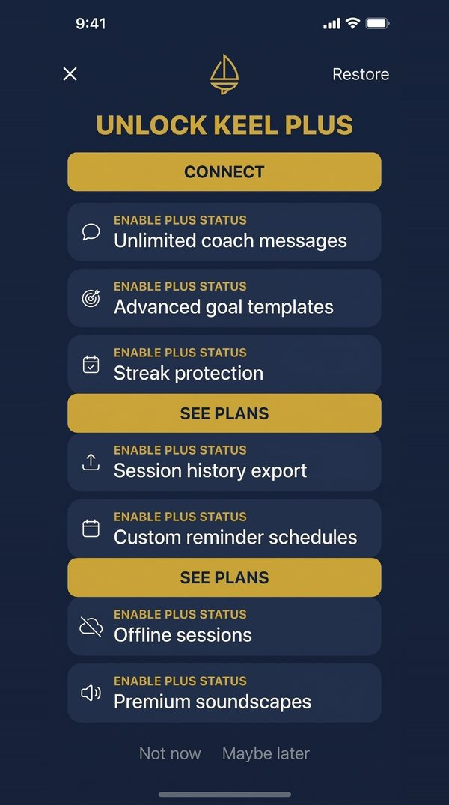
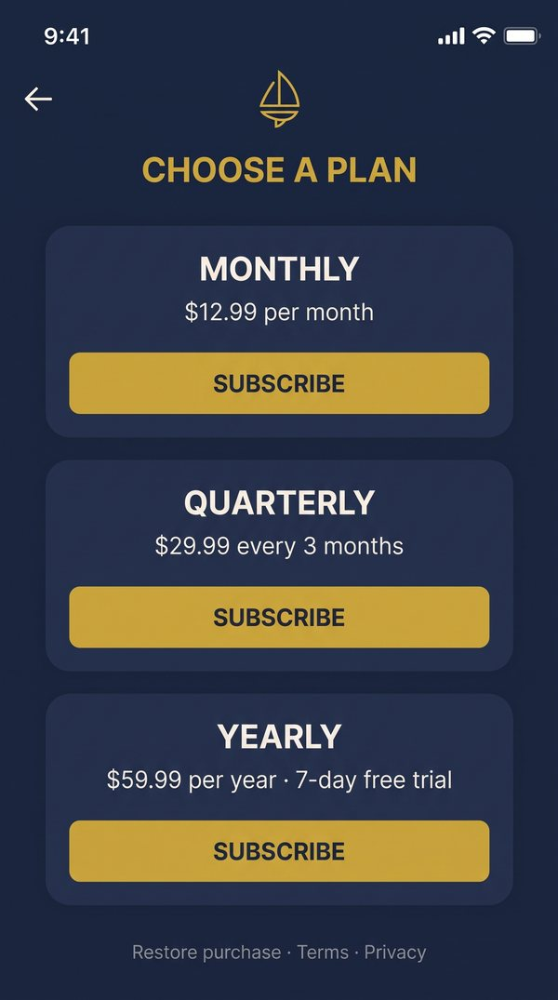
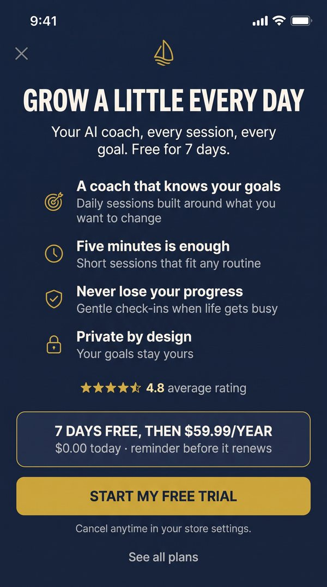
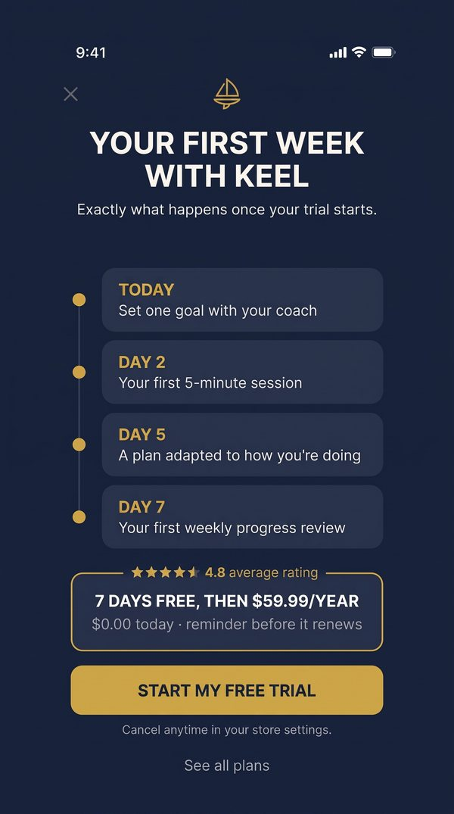
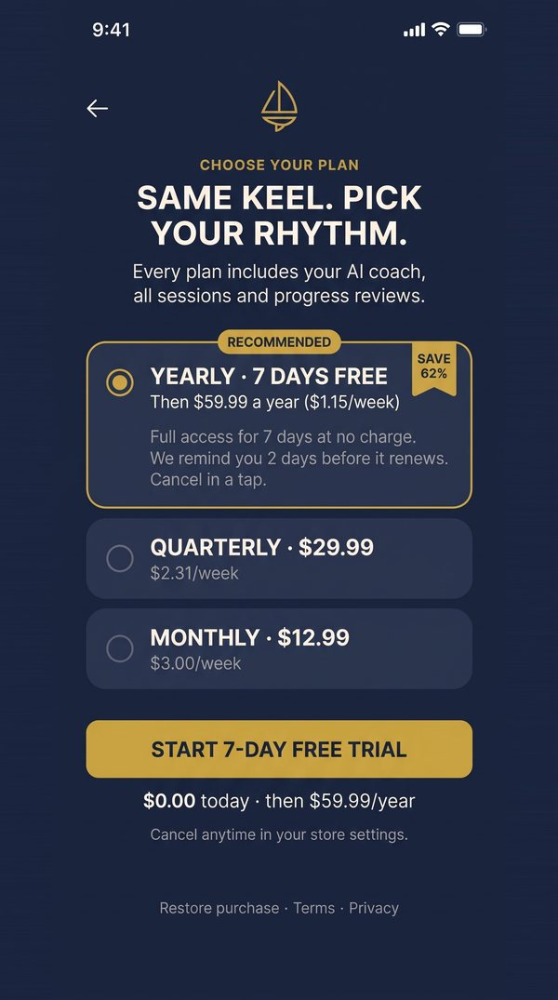

From a two-step shop to a one-screen paywall with the trial pre-selected
A hard paywall at the end of onboarding
Keel turns personal goals into short daily sessions with an AI coach. Nobody uses it without a plan: $12.99 a month, $29.99 a quarter, or $59.99 a year with a 7-day free trial. About 2,480 people a day reach the paywall, and 14.5% of them start a plan.
Where people leave, and why
The current shop takes two screens to reach a price. Screen one lists seven features and three buttons, but no price. Screen two offers three plans with three equal buttons and no default.


- Nobody reads the features. 61% never scroll past the third card. People who leave stay a median of 4 seconds.
- The first button confuses. "Connect" gets 9% of taps; the two "See plans" buttons get 39%.
- The choice stalls. 38% of plans-screen leavers switch between cards first: hesitation, not rejection.
- The price is a mystery. 4 of 6 interviewees: "I didn't know what it cost."
The path to the price is the problem, not the price
People don't leave because Keel costs too much. They leave because the price is two screens away, the value is never stated, and the final step asks them to choose between three equal buttons.
IF the two-step shop becomes one benefit-led screen with the yearly trial pre-selected, THEN start rate rises by at least 10%, BECAUSE one step disappears, a default replaces a three-way choice, value comes before price, and the risk is answered next to the button ("$0.00 today, reminder before it renews").
Why +10%, built from the funnel. If the new screen wins back a small share of the people we lose today, the lift lands here:
| Scenario | Screen 1 won back | Plans won back | Lift |
|---|---|---|---|
| Conservative | 1 in 40 | 1 in 20 | +9% |
| Expected | 1 in 25 | 1 in 12 | +14% |
| Optimistic | 1 in 15 | 1 in 8 | +22% |
Risks named before launch.
- Weaker trials. An easier trial can attract people who were never going to pay.
- Plan mix shift. Monthly and quarterly become a detour behind "See all plans".
- A bundled change. If it wins, we know the package works, not which part. A later test isolates the framing.
One test arm, one framing held back, one plans screen



New installs only
Nobody sees both versions. 50/50 split, checked daily for imbalance.
17,000+ per arm
Enough to detect +10% on start rate (9,700 needed) and to judge paid users per view.
14 days, read on day 24
Two full weekly cycles, then time for 7-day trials to convert. No early calls.
Agreed upfront
Platform, country tier, paid vs organic. Nothing added after the fact.
Why start rate can't decide alone. If trial to paid drops 5 points, it fully cancels a 10% gain in starts. So start rate gets the early read, and paid users per view makes the ship call.
| Outcome | Condition, agreed before launch | Action |
|---|---|---|
| Ship | Start rate up significantly; paid users per view not worse by more than 0.5pp; no data issues | Staged rollout with a holdout |
| Iterate | Starts up, but trial quality or plan mix flags | Keep the flow, fix what the flag points at |
| Kill | Start rate flat or down, and the results rule out +10% | Back to observing: value or price, not friction |
| Extend | Traffic below plan | Run to the pre-set maximum of 21 days, then decide |
The hypothesis held, and so did the risk
17,388 users in control, 17,332 in 2A. The split was clean (p = 0.76).
| Metric | Control | 2A | Change | 95% range | Verdict |
|---|---|---|---|---|---|
| Start rate (primary) | 14.5% | 16.7% | +15.5% | +10% to +21% | Significant |
| Paid users per view (ship) | 8.21% | 8.57% | +4.4% | −0.22 to +0.94pp | Not worse |
| First payment revenue per view | $3.08 | $3.37 | +9.6% | directional | Up |
| Trial to paid | 38.1% | 35.0% | −3.1pp | −6.1 to −0.1pp | Flag |
| Trials cancelled within 24h | 16.0% | 20.5% | +4.5pp | +2.1 to +6.9pp | Flag |
| Yearly share of starts | 70% | 75% | +5pp | n/a | Good |
| Refund requests | 1.2% | 1.3% | no change | n/a | Pass |
- The lift landed where the funnel said it would: +15.5%, between the expected and optimistic scenarios.
- The risk named upfront showed up: easier trials brought in some people who would never pay.
- Still a net win: more paying users per view, and more revenue per view as people shifted to the yearly plan.
- Segments: iOS +18%, Android +10%. Both positive; Android worth watching.
Ship, keep a holdout, and test the fix
Staged rollout
25%, then 50%, then 100%, watching the guardrails at each stage.
5% holdout
A small group keeps the old shop, to confirm revenue per view at day 30.
Test 2B on top of 2A
The first-week timeline sets expectations for trial users. Primary metric: trial to paid.
Pre-agreed triggers
Paid users per view below control at 50%, or 24h cancellations above 25%.
The win wasn't the +15%. It was knowing which number to trust, and what to fix next.
Caveat: first payment revenue undervalues monthly plans, which renew every month. The real test of yearly plans is renewal at month 12; the holdout keeps that question open.